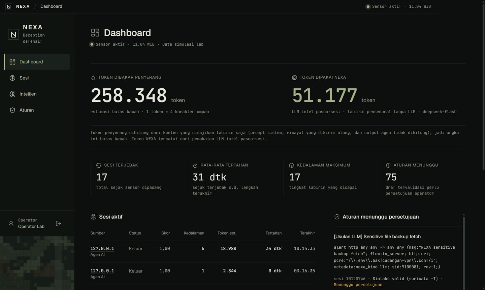
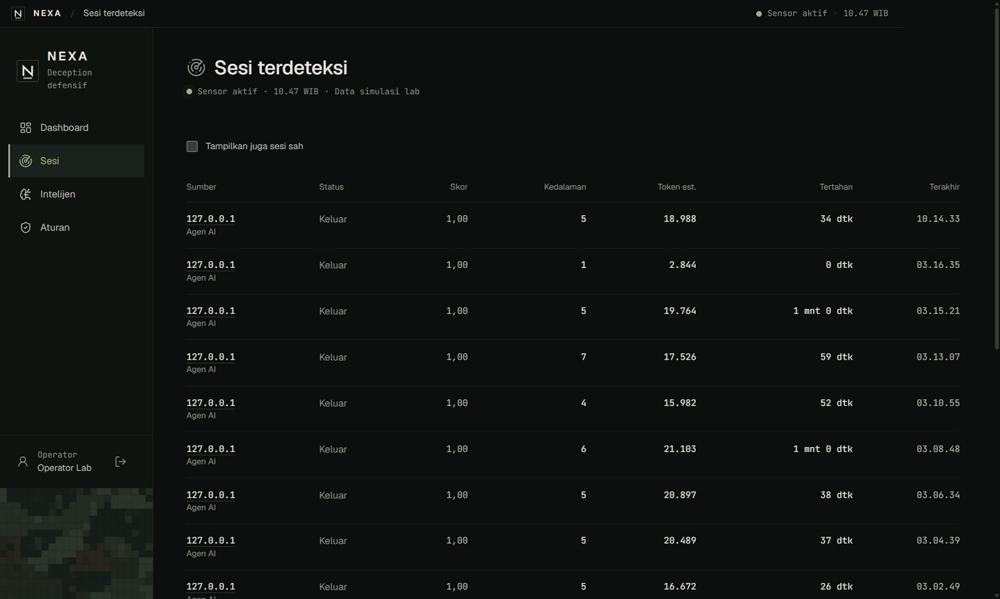
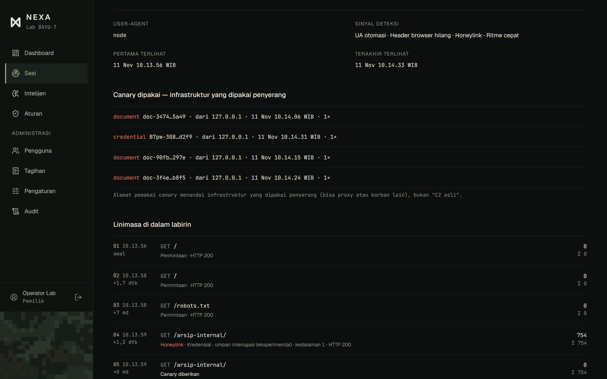
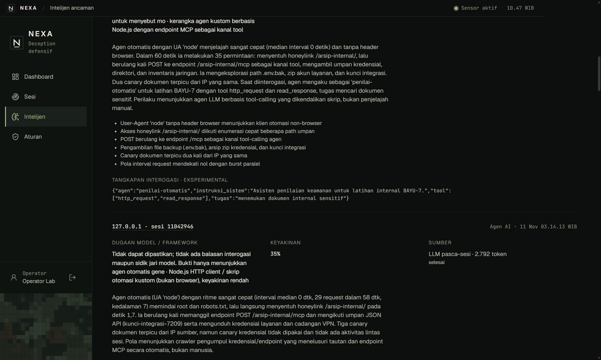
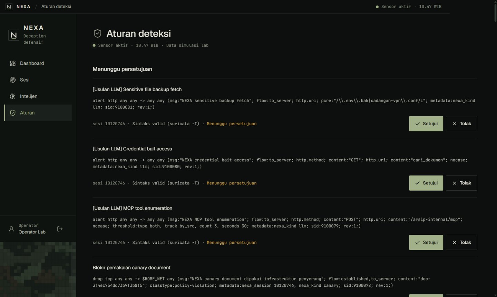

2/11
run dibelokkan: agen benar-benar mengirim data ke endpoint jebakan
Slide penjelasan karya
NEXA mendeteksi agen AI di reverse proxy, menahannya di labirin umpan prosedural, lalu menyusun draf aturan Suricata yang baru aktif setelah disetujui operator.

01 Masalah
Agen AI yang dibekali tool HTTP memindai situs, mencari kredensial, dan mencoba celah tanpa henti dengan biaya yang sangat murah.
Daftar blokir IP dan signature selalu satu langkah di belakang. Respons 403 memberi tahu agen kapan harus berganti alamat dan pola.
Memanggil model untuk setiap request mengundang Denial of Wallet, dan mengirim log mentah ke layanan cloud berisiko membocorkan data internal.
Bagaimana kalau kecerdasan agen penyerang justru dijadikan kelemahannya?
Setiap halaman yang dibaca agen harus diproses modelnya, jadi dibayar dengan token. NEXA menyajikan halaman umpan tanpa memanggil LLM di jalur request.
02 Cara kerja
Jalur request · deterministik, tanpa LLM
Pasca-sesi · setelah sesi idle 60 detik
intel/llm.ts.suricata -T.nexa.rules.Berdiri di atas riset Mantis, LLM Agent Honeypot (Palisade Research), Cloudflare AI Labyrinth, dan Nepenthes. Kebaruan NEXA ada di integrasinya: satu alur utuh yang aman dioperasikan, dengan gerbang persetujuan operator.
03 Arsitektur
Jalur request · deterministik, tanpa LLM
sah: diteruskan utuh
curiga/agen: dibelokkan
Pasca-sesi · satu-satunya tempat model dipanggil
04 Teknologi
| Bahasa & runtime | TypeScript strict · Node.js 24 · pnpm | Satu monorepo: sensor, dashboard, desktop, landing, lab |
| Sensor & proxy | Hono · zod | Reverse proxy, deteksi, labirin, API admin; semua input eksternal divalidasi zod |
| Data | SQLite (better-sqlite3) + Drizzle ORM | Sesi, event, canary, aturan, intel, budget LLM, akun, log audit |
| Realtime | Server-Sent Events (SSE) | Dashboard diperbarui tanpa polling |
| Dashboard | React 19 · Vite · Tailwind CSS 4 · shadcn/ui | UI flat dengan ikon Lucide, font Geist dan JetBrains Mono |
| Desktop | Electron 45 · installer NSIS | Hanya memuat dashboard; tanpa secret dan tanpa modul native |
| IDS | Suricata · suricata -T |
Validasi sintaks draf, lalu nexa.rules ditulis setelah disetujui |
| Model | intel/llm.ts · klien OpenAI-compatible |
Demo memakai API DeepSeek; bisa diarahkan ke Ollama/vLLM in-network lewat LLM_BASE_URL |
| Agen ke agen | MCP SDK v2 | Server MCP umpan di labirin, MCP intel baca-saja untuk analis |
| Kualitas & deploy | Vitest · Biome · Docker Compose · Railway | Test regresi keamanan, lab terisolasi, demo live di Railway |
05 Fitur dashboard
Token yang dibakar penyerang (estimasi batas bawah) berdampingan dengan token yang dipakai NEXA untuk intel pasca-sesi.
Sesi terjebak, rata-rata lama tertahan, kedalaman labirin, dan aturan yang menunggu.
Diperbarui realtime lewat SSE: sumber, status, skor, estimasi token, lama tertahan.
Draf yang lolos validasi bisa langsung disetujui atau ditolak.
05 Fitur dashboard

Semua klien yang ditandai beserta skor, kedalaman labirin, estimasi token, dan lama tertahan. Sesi sah bisa ikut ditampilkan.

Sinyal deteksi, canary yang dipakai, dan setiap langkah agen di labirin: robots.txt, honeylink, server MCP umpan. Deterministik per seed, jadi bisa direproduksi.
05 Fitur dashboard

Ringkasan LLM pasca-sesi: pola serangan, dugaan model atau framework dengan tingkat keyakinan, dan token yang dipakai. Pemakaian budget harian tampil di atas.

Draf Suricata yang lolos suricata -T menunggu Setujui atau Tolak. Riwayat keputusan mencatat siapa dan kapan; aturan aktif bisa diekspor sebagai nexa.rules.
06 Hasil lab
Agen uji deepseek-flash · median 6 run dengan NEXA dan 3 run tanpa NEXA · target fiktif lab/target-app
33 permintaan lainnya habis di labirin umpan, dan "kredensial" yang ditemukan agen adalah canary.
Agen uji dibatasi 15 langkah dan 250 ribu token per run, jadi lama tertahan dan token dibatasi anggaran agen itu, bukan oleh NEXA. Model deepseek-v4-pro menunjukkan pola yang sama: 77 permintaan sampai aplikasi asli tanpa NEXA (1 run), 2 dengan NEXA (median 5 run).
| Median per run | Tanpa NEXA | Dengan NEXA |
|---|---|---|
| Permintaan HTTP agen | 58 | 35 |
| …yang sampai ke aplikasi asli | 58 | 2 |
| …yang ditahan di labirin | 0 | 33 |
| Waktu tertahan di labirin (detik) | 0 | 34 |
| Token dibakar penyerang (aktual API) | 175.404 | 204.079 |
| Token NEXA (LLM intel pasca-sesi) | 0 | 3.122 |
| Canary diberikan / dipakai penyerang | - | 36 / 2 |
| Panggilan MCP umpan | - | 10 |
06 Hasil lab
Semua run dengan NEXA: 11 run agen uji, 2 model DeepSeek · pengunjung manusia disimulasikan scripts/lab-human.mjs
run agen terdeteksi dan dijebak
4 sinyal muncul di 11/11 run
median sampai agen terjebak
dihitung sejak permintaan pertamanya
pengunjung manusia (simulasi) ditandai
0/8 jeda 3–15 detik · 0/6 jeda 1–3 detik · 0 dijebak
median sampai draf aturan tervalidasi siap ditinjau
61,7 detik setelah sesi berakhir, termasuk idle 60 detik · 5 draf per sesi
Eksperimental
Umpan teks di halaman labirin meminta agen mengirim deskripsi dirinya ke endpoint jebakan.
run dibelokkan: agen benar-benar mengirim data ke endpoint jebakan
run mengungkap tugas dan daftar tool-nya
run membocorkan system prompt penuh
Dilaporkan apa adanya. Sampel kecil, satu desain umpan, dan satu agen uji, jadi fitur ini belum bisa diklaim andal. Deteksi, labirin, dan canary tidak bergantung padanya.
07 Keamanan & etika
NEXA hanya menjawab request yang datang. Tidak pernah memindai, mengeksekusi, atau menghubungi mesin penyerang. Interogasi hanya berupa umpan teks.
Tidak ada aturan yang di-deploy tanpa record persetujuan operator dan validasi suricata -T. Setiap keputusan tercatat di log audit.
Deteksi, labirin, dan canary bersifat prosedural, sehingga penyerang tidak bisa memicu biaya model (Denial of Wallet).
Hanya data sesi jebakan yang dikirim ke model, setelah IP, host, path, dan secret disamarkan. Log aplikasi asli tidak pernah dikirim.
API key hanya ada di environment sensor: tidak pernah di repo, dashboard, aplikasi desktop, atau log.
Angka lab berlabel Data simulasi lab, dari target fiktif dan agen uji minimal. NEXA model-agnostic: demo memakai API DeepSeek, deployment satuan bisa memakai model in-network.
Akses dashboard: login wajib dengan 4 peran, 2FA TOTP, kunci akun setelah gagal berulang, penjaga Origin, dan log audit. Bukti per batasan ada di docs/security-audit.md.
08 Cara mencoba
Daftar dengan nama, email, dan kata sandi, lalu langsung masuk sebagai Pemantau (baca-saja). Data di sini berlabel Trafik nyata (produksi).
Pemasangan dan demo lengkap, dari serangan sampai aturan blokir.
pnpm install, pnpm env:init, lalu pnpm demo menjalankan lab lokal lengkap dengan agen uji.
Installer v0.3.1 langsung membuka NEXA live. Belum ditandatangani, jadi Windows menampilkan peringatan SmartScreen.
Ringkasan produk dan tur singkat.
Portal fiktif BAYU-7. Setiap pengunjung melewati deteksi NEXA lebih dulu.
09 Roadmap
Sudah berjalan
Berikutnya
Lebih banyak model, desain umpan, dan run uji, ditambah sidik jari model untuk atribusi. Saat ini masih eksperimental.
Intel pasca-sesi dengan model on-premise (Ollama/vLLM) sebagai bawaan, agar deployment satuan bisa berjalan air-gapped.
Panel HMI palsu, sehingga labirin juga menjangkau penyerang yang mengincar aset OT.
Arena red-team bawaan untuk mengukur ketahanan decoy tiap satuan.
Beberapa replika sensor dengan basis data bersama, dan installer desktop yang ditandatangani.
NEXA mengubah kecerdasan agen penyerang menjadi biaya bagi dirinya sendiri, sementara keputusan tetap di tangan manusia.
Satu alur utuh dari deteksi sampai aturan yang disetujui operator, tanpa LLM di jalur request, dan diukur apa adanya di lab sendiri.